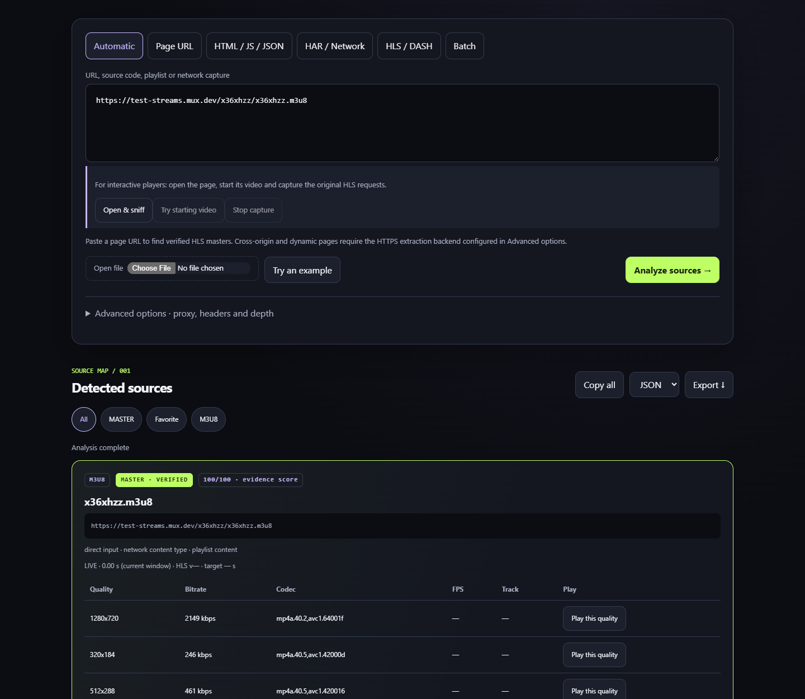
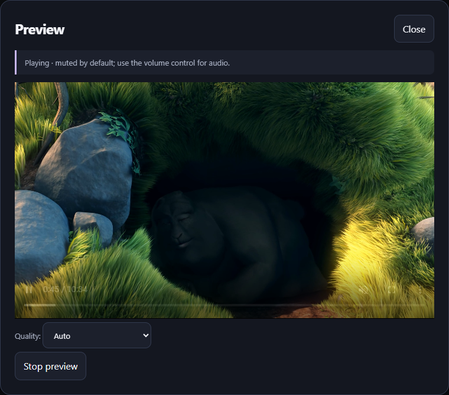
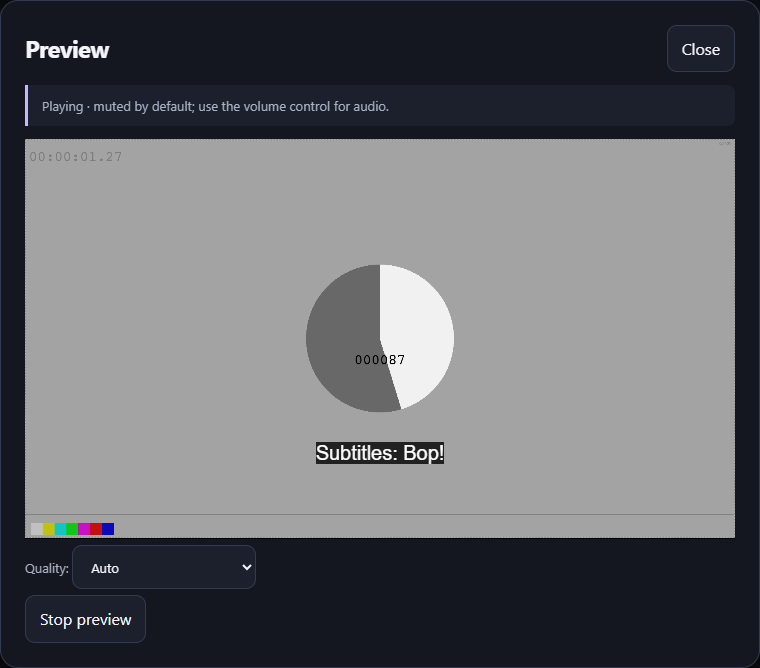

Verified masters
Read the actual HLS playlist. Keep the parent M3U8 links without image and thumbnail clutter.
Inspect streaming pages, extract verified HLS master links and preview the available video qualities. Run the complete tool on your Windows computer.
Read the actual HLS playlist. Keep the parent M3U8 links without image and thumbnail clutter.
A local browser detects HLS requests generated by embedded players. Observe public HTTP(S) pages without a broadcaster-specific allowlist.
Open Preview, choose Auto or select a video quality. The player starts muted so you can control the audio.
These sample streams are published for playback testing. Copy a playlist URL, open the downloaded local tool and follow the walkthrough below.
A multivariant HLS demo featuring the Blender Foundation open movie.
https://test-streams.mux.dev/x36xhzz/x36xhzz.m3u8An official HLS example with multiple video qualities and audio renditions.
https://devstreaming-cdn.apple.com/videos/streaming/examples/img_bipbop_adv_example_ts/master.m3u8Official Apple streaming examples · View analysis screenshot
Start the local tool with Start-StreamLens.cmd. Paste one of the demo URLs into the input box, then click Analyze sources. The results show a MASTER · VERIFIED card only after the actual playlist has been read.

Click Preview on the master card. Playback starts muted; use the video volume control to enable sound. Choose Auto for adaptive playback, or select a resolution from the Quality menu. You can also use Play this quality beside a variant in the results table.


Paste the original streaming page URL and choose Open & sniff. The included browser opens that page and observes HLS requests from its players and embedded frames. Start the video in that window, or use Try starting video in StreamLens. Source links appear in the local results as the requests are detected. Use Stop capture when finished. Sessions are temporary and expire after ten minutes. This mode observes the included browser, not tabs in your regular browser. DRM and site access restrictions still apply.
Use Copy on a card to copy its parent M3U8 URL. Use Copy all or Export for the verified master results. Close the preview when finished, then run Stop-StreamLens.cmd to stop the local service.
Check your internet connection and open the official source page. Public demo URLs may change. The local tool needs access to both the playlist and video segments. An extracted link does not guarantee that a remote server will permit playback.
This page describes and distributes the desktop tool. Analysis runs on your computer. Internet is required for broadcaster pages and live streams. Authentication, DRM and website restrictions can prevent extraction; private-network addresses are blocked.